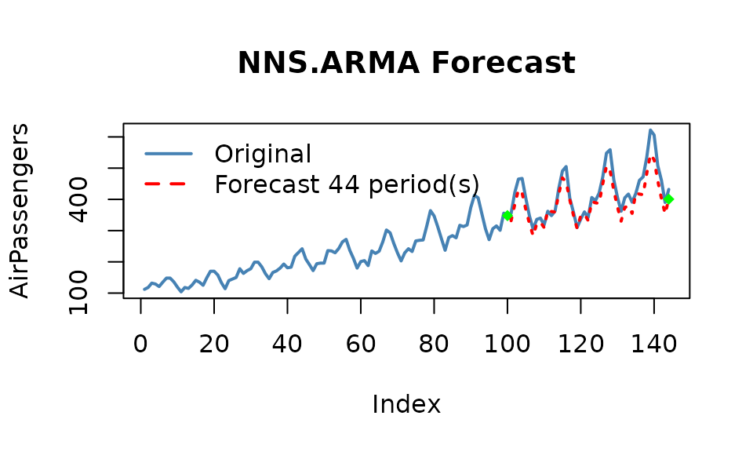
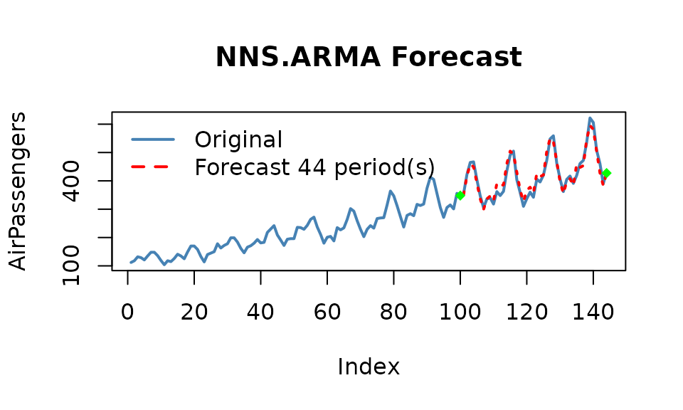
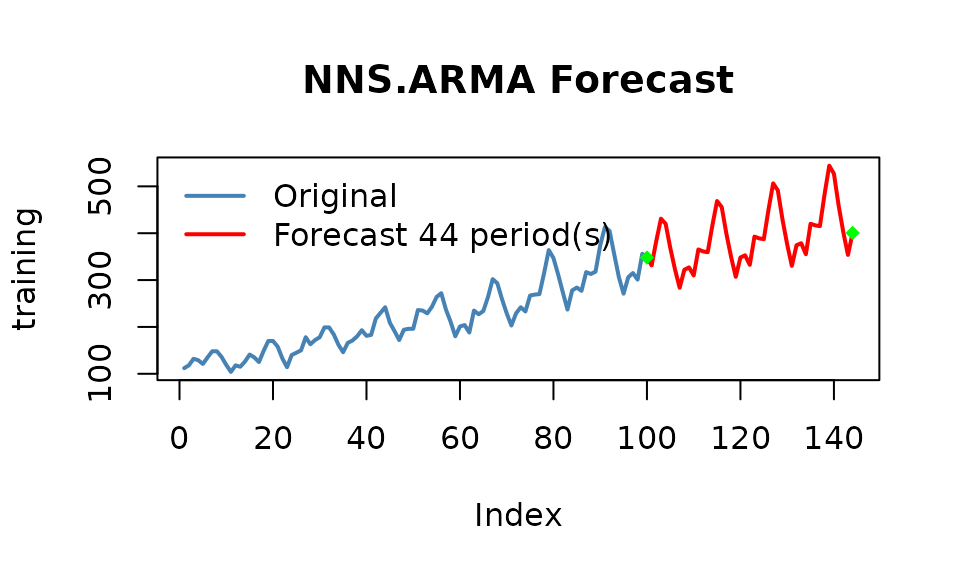
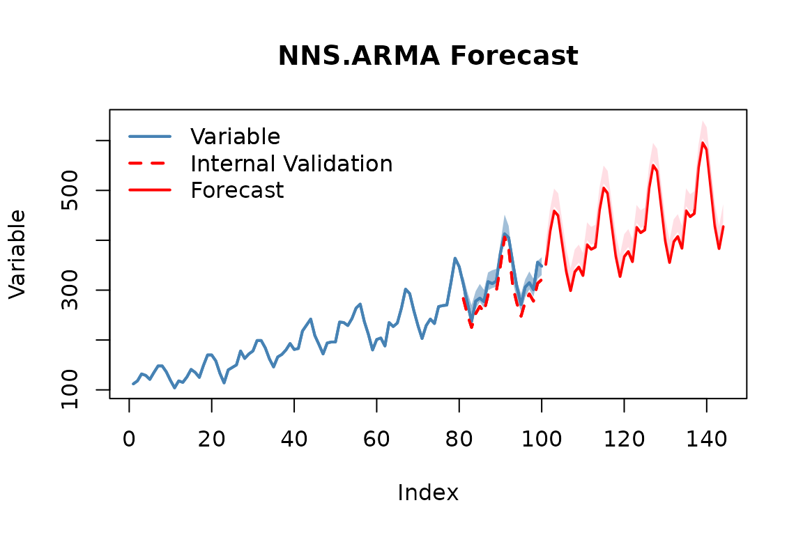
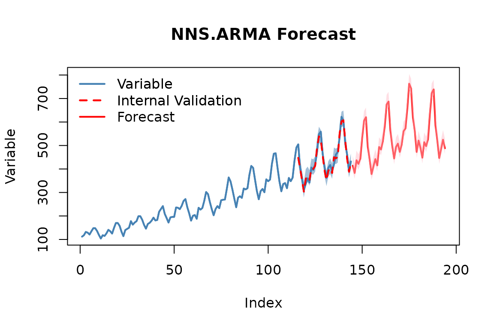

Getting Started with NNS: Forecasting
Fred Viole
Source:vignettes/NNSvignette_09_Forecasting.Rmd
NNSvignette_09_Forecasting.RmdForecasting
The underlying assumptions of traditional autoregressive models are well known. The resulting complexity with these models leads to observations such as,
``We have found that choosing the wrong model or parameters can often yield poor results, and it is unlikely that even experienced analysts can choose the correct model and parameters efficiently given this array of choices.’’
NNS simplifies the forecasting process. Below are some
examples demonstrating NNS.ARMA and its
partial-moment component forecasting method. It does not require a
parametric distribution family; predictive assessment still requires a
suitable temporal validation design.
Linear Regression
NNS.ARMA has the ability to fit a
linear regression to the relevant component series, yielding very fast
results. For our running example we will use the
AirPassengers dataset loaded in base R.
We will forecast 44 periods h = 44 of
AirPassengers using the first 100 observations
training.set = 100, returning estimates of the final 44
observations. We will then test this against our validation set of
tail(AirPassengers,44).
Since this is monthly data, we will try a
seasonal.factor = 12.
Below is the linear fit and associated root mean squared error (RMSE)
using method = "lin".
nns_lin = NNS.ARMA(AirPassengers,
h = 44,
training.set = 100,
method = "lin",
plot = TRUE,
seasonal.factor = 12,
seasonal.plot = FALSE)
## [1] 35.39965Nonlinear Regression
Now we can try using a nonlinear regression on the relevant component
series using method = "nonlin".
nns_nonlin = NNS.ARMA(AirPassengers,
h = 44,
training.set = 100,
method = "nonlin",
plot = TRUE,
seasonal.factor = 12,
seasonal.plot = FALSE)
## [1] 17.90252The plot and RMSE are computed when this vignette is built, using the installed NNS version. They describe this fixed training/test split; historical values are not a performance guarantee.
Cross-Validation
We select the period using only the first 100 observations. Within that training prefix, the first 80 observations fit candidate models and observations 81–100 select the period. The final 44 observations remain untouched until the selected model is evaluated. Known monthly frequency is also a legitimate pre-specified choice; selecting a period on those final 44 outcomes would make their error a tuning score rather than a test score.
training <- head(AirPassengers, 100)
inner_n <- 80L
candidates <- 1:16
seas <- data.frame(
Period = candidates,
validation_RMSE = vapply(candidates, function(period) {
predicted <- NNS.ARMA(head(training, inner_n), h = length(training) - inner_n,
method = "lin", seasonal.factor = period,
plot = FALSE, seasonal.plot = FALSE)
sqrt(mean((predicted - tail(training, length(training) - inner_n))^2))
}, numeric(1))
)
a <- seas$Period[which.min(seas$validation_RMSE)]
seas## Period validation_RMSE
## 1 1 43.78888
## 2 2 43.80467
## 3 3 43.10466
## 4 4 44.27946
## 5 5 46.43585
## 6 6 41.88094
## 7 7 46.64724
## 8 8 46.23633
## 9 9 51.19663
## 10 10 54.06680
## 11 11 56.15792
## 12 12 31.63458
## 13 13 55.53088
## 14 14 67.55522
## 15 15 60.16975
## 16 16 58.26864
selected <- NNS.ARMA(training, h = 44, method = "lin", seasonal.factor = a,
plot = TRUE, seasonal.plot = FALSE)
## [1] 35.39965This outer test score evaluates one selected procedure. The earlier linear and nonlinear illustrations are separate pre-specified comparisons; choosing among them after seeing their test errors would require a new test period.
Note: You may experience instances with monthly data
that report seasonal.factor close to multiples of 3, 4, 6
or 12. For instance, if the reported
seasonal.factor = {37, 47, 71, 73} use
(seasonal.factor = c(36, 48, 72)) by setting the
modulo parameter in
NNS.seas(..., modulo = 12). The same
suggestion holds for daily data and multiples of 7, or any other time
series with logically inferred cyclical patterns. The nearest periods to
that modulo will be in the expanded output.
NNS.seas(training, modulo = 12, plot = FALSE)## $all.periods
## Period Coefficient.of.Variation Variable.Coefficient.of.Variation
## 1 12 0.08014336 0.1532545
## 2 24 0.08386687 0.1532545
##
## $best.period
## [1] 12
##
## $periods
## [1] 12 24Selecting Seasonal Factors with NNS.ARMA.optim
NNS also offers a wrapper function
NNS.ARMA.optim() that searches
combinations from a supplied vector of seasonal.factor and
returns the selected objective value (in this case RMSE written as
obj.fn = expression( sqrt(mean((predicted - actual)^2)) ))
and the corresponding periods, as well as the
NNS.ARMA regression method used.
Alternatively, using external package objective functions work as well
such as
obj.fn = expression(Metrics::rmse(actual, predicted)).
NNS.ARMA.optim() also compares
smoothing the training series, shrinking component forecasts toward
their means, and weighting seasonal estimates. The default linear
approximation uses the linear search to select seasonal candidates
before comparing nonlinear and mixed forecasts. By default it adds no
bias shift (bias.correction = "none"); "split"
estimates a gravity shift from the first half of the internal validation
errors and accepts it on the later half, and
bias.validation reports that decision. These are tuning
steps within the first 100 observations.
For this monthly series, we specify periods of 12, 18 and 24 months before inspecting the reserved test outcomes. Each leaves at least three observations per phase in the 80-observation inner training window. Longer candidates up to 60 would be removed by the optimizer’s sample-support rule for this window, so the code lists the supported candidates explicitly.
optimizer_periods <- c(12L, 18L, 24L)
nns.optimal <- NNS.ARMA.optim(training,
training.set = inner_n, h = 44,
seasonal.factor = optimizer_periods,
obj.fn = expression(sqrt(mean((predicted - actual)^2))),
objective = "min",
ncores = 1, print.trace = FALSE,
pred.int = .95, plot = TRUE)
nns.optimal## $periods
## [1] 12
##
## $weights
## NULL
##
## $obj.fn
## [1] 26.17135
##
## $method
## [1] "nonlin"
##
## $shrink
## [1] FALSE
##
## $nns.regress
## [1] FALSE
##
## $bias.shift
## [1] 0
##
## $bias.validation
## $bias.validation$policy
## [1] "none"
##
## $bias.validation$estimated.shift
## [1] 0
##
## $bias.validation$applied.shift
## [1] 0
##
## $bias.validation$estimate.rows
## integer(0)
##
## $bias.validation$acceptance.rows
## integer(0)
##
## $bias.validation$raw.score
## [1] NA
##
## $bias.validation$adjusted.score
## [1] NA
##
## $bias.validation$accepted
## [1] FALSE
##
## $bias.validation$status
## [1] "disabled"
##
##
## $raw.results
## [1] 351.5357 416.9881 458.7143 449.3373 392.5159 336.5437 298.9365 336.4444
## [9] 346.3643 329.2791 391.0775 381.8643 386.0959 460.4725 504.8682 494.0918
## [17] 430.5114 367.5057 327.2567 367.1606 377.4073 357.0265 425.9934 415.2036
## [25] 420.6647 503.5999 550.2190 538.3911 467.7517 397.7587 355.3077 396.9306
## [33] 407.5023 383.8903 459.2223 447.3086 453.5746 545.6254 595.4617 581.6900
## [41] 504.6181 428.0697 383.3069 427.4418
##
## $validation.forecast
## [1] 283.1667 250.8667 225.0667 252.9667 267.4438 255.6970 290.5894 295.0285
## [9] 297.5839 349.4541 406.5728 383.8038 307.7166 273.1074 247.6094 276.5102
## [17] 292.4705 277.8527 313.5819 321.0222
##
## $errors
## [1] -28.833333 -23.133333 -11.933333 -25.033333 -16.556171 -21.303006
## [7] -26.410601 -17.971519 -20.416139 -24.545886 -6.427215 -21.196203
## [13] -47.283360 -32.892616 -23.390559 -29.489847 -22.529482 -23.147274
## [19] -42.418145 -26.977785
##
## $results
## [1] 351.5357 416.9881 458.7143 449.3373 392.5159 336.5437 298.9365 336.4444
## [9] 346.3643 329.2791 391.0775 381.8643 386.0959 460.4725 504.8682 494.0918
## [17] 430.5114 367.5057 327.2567 367.1606 377.4073 357.0265 425.9934 415.2036
## [25] 420.6647 503.5999 550.2190 538.3911 467.7517 397.7587 355.3077 396.9306
## [33] 407.5023 383.8903 459.2223 447.3086 453.5746 545.6254 595.4617 581.6900
## [41] 504.6181 428.0697 383.3069 427.4418
##
## $lower.pred.int
## [1] 360.5783 426.0307 467.7569 458.3799 401.5585 345.5863 307.9791 345.4871
## [9] 355.4070 338.3217 400.1201 390.9070 395.1386 469.5152 513.9108 503.1345
## [17] 439.5540 376.5483 336.2993 376.2033 386.4499 366.0691 435.0360 424.2463
## [25] 429.7073 512.6425 559.2616 547.4337 476.7943 406.8013 364.3503 405.9733
## [33] 416.5450 392.9329 468.2650 456.3513 462.6173 554.6680 604.5044 590.7326
## [41] 513.6607 437.1123 392.3495 436.4844
##
## $upper.pred.int
## [1] 396.5081 461.9605 503.6867 494.3097 437.4883 381.5160 343.9089 381.4168
## [9] 391.3367 374.2515 436.0499 426.8367 431.0683 505.4449 549.8406 539.0642
## [17] 475.4838 412.4781 372.2291 412.1330 422.3797 401.9989 470.9658 460.1760
## [25] 465.6371 548.5723 595.1914 583.3635 512.7241 442.7310 400.2801 441.9030
## [33] 452.4747 428.8627 504.1947 492.2810 498.5470 590.5978 640.4341 626.6624
## [41] 549.5905 473.0421 428.2792 472.4142
c(internal_validation_RMSE = nns.optimal$obj.fn,
raw_reserved_test_RMSE = sqrt(mean((nns.optimal$raw.results - tail(AirPassengers, 44))^2)),
corrected_reserved_test_RMSE = sqrt(mean((nns.optimal$results - tail(AirPassengers, 44))^2)))## internal_validation_RMSE raw_reserved_test_RMSE
## 26.17135 17.90252
## corrected_reserved_test_RMSE
## 17.90252The optimizer’s obj.fn describes its final
internal validation forecast. The other two scores
evaluate the raw forecast and the returned, corrected forecast against
the reserved final 44 observations. They are diagnostics; the example
does not use them to choose a bias policy. Selecting a policy from these
comparisons would require a new chronological test window. All values
and the returned forecasts are regenerated at each build. A fitted bias
shift is a model parameter, not proof of persistent future bias.
Extension of Estimates
We can forecast another 50 periods out-of-sample
(h = 50), using all observations now available as training
history. The requested interval level names the residual-quantile
construction; future coverage must be assessed separately.
The longer history supports candidate periods through 36 months under the optimizer’s default 80% internal training split. This deployment example has no observed future outcomes to score.
extended <- NNS.ARMA.optim(AirPassengers,
seasonal.factor = seq(12, 36, 6),
obj.fn = expression(sqrt(mean((predicted - actual)^2))),
objective = "min",
ncores = 1, print.trace = FALSE,
pred.int = .95, h = 50, plot = TRUE)
head(data.frame(horizon = seq_along(extended$results),
forecast = extended$results,
lower = extended$lower.pred.int,
upper = extended$upper.pred.int))## horizon forecast lower upper
## 1 1 414.3000 389.7333 455.3167
## 2 2 382.7071 358.1405 423.7238
## 3 3 437.3357 412.7690 478.3524
## 4 4 421.4714 396.9048 462.4881
## 5 5 443.2357 418.6690 484.2524
## 6 6 533.5429 508.9762 574.5595Brief Notes on Other Parameters
seasonal.factor = c(1, 2, ...)
We included the ability to use any number of specified seasonal periods simultaneously, weighted by their strength of seasonality. Computationally expensive when used with nonlinear regressions and large numbers of relevant periods.
weights
Instead of weighting by the seasonal.factor strength of
seasonality, we offer the ability to weight each per any defined
compatible vector summing to 1.
Equal weighting would be weights = "equal".
pred.int
Returns lower and upper bands for each forecasted point from a
maximum entropy bootstrap of the forecast path, and plots the
bootstrapped replicates. The band describes how dispersed the forecast
path is, not the probability that future values fall inside it: it does
not widen with the horizon and is not calibrated to the nominal level.
NNS.ARMA.optim builds its interval from validation errors
instead.
seasonal.factor = FALSE
We also included the ability to use all detected seasonal periods simultaneously, weighted by their strength of seasonality. Computationally expensive when used with nonlinear regressions and large numbers of relevant periods.
best.periods
This parameter restricts the number of detected seasonal periods to
use, again, weighted by their strength. To be used in conjunction with
seasonal.factor = FALSE.
modulo
To be used in conjunction with seasonal.factor = FALSE.
This parameter will ensure logical seasonal patterns (i.e.,
modulo = 7 for daily data) are included along with the
results.
mod.only
To be used in conjunction with
seasonal.factor = FALSE & modulo != NULL. With
mod.only = TRUE (default), only periods at multiples of
modulo are kept: each detected period is replaced by the
multiples of modulo on either side of it (period 7 with
modulo = 5 gives 5 and 10). Set
mod.only = FALSE to keep the empirically detected periods
along with the logical seasonal patterns.
dynamic = TRUE
This setting generates a new seasonal period(s) using the estimated
values as continuations of the variable, either with or without a
training.set. Also computationally expensive due to the
recalculation of seasonal periods for each estimated value.
-
plot,seasonal.plot
These are the plotting arguments, easily enabled or disabled with
TRUE or FALSE.
seasonal.plot = TRUE will not plot without
plot = TRUE. If a seasonal analysis is all that is desired,
NNS.seas is the function specifically suited for that
task.
Multivariate Time Series Forecasting
The extension to a generalized multivariate instance is provided in
the following documentation of the
NNS.VAR() function: